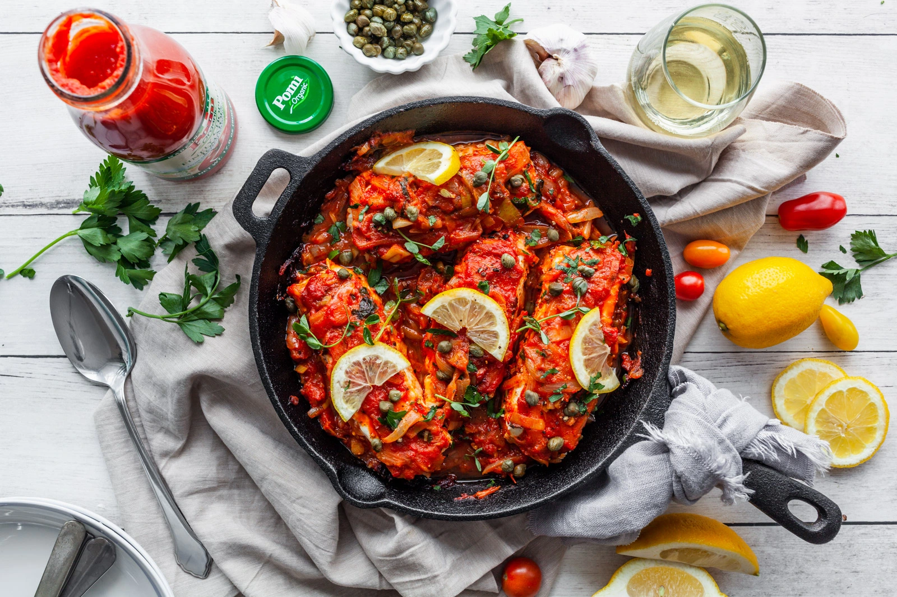

Fish with tomatoes
Fish with tomatoes is a delicious and healthy dish that combines tender fish fillets with a rich, flavorful tomato sauce. The dish typically features fresh tomatoes, garlic, onions, and herbs like basil or oregano, which are simmered together to create a savory sauce that complements the delicate taste of the fish. It's a versatile meal that can be served with rice, pasta, or crusty bread, making it a comforting and satisfying option for any occasion.

Ingredients
Ingredient list goes here...
- Fish

- Tomatoes, garlic and onions

- Lemons
- Parsley
- Salt and pepper
Step by step instructions
- In a large pan, heat olive oil and sauté minced garlic and chopped onions until softened and fragrant.
- Add chopped fresh tomatoes (or canned if preferred) and cook until they start to break down into a sauce. Season with salt, pepper, and your favorite herbs like basil or oregano.
- Nestle the fish fillets into the tomato sauce. Spoon some sauce over the fish, cover the pan, and let it simmer gently for 10-15 minutes, until the fish is cooked through and flaky.
- Sprinkle fresh parsley or basil over the top just before serving for added freshness and flavor.
- Plate the fish with the tomato sauce and serve with a side of rice, pasta, or crusty bread. Enjoy! .